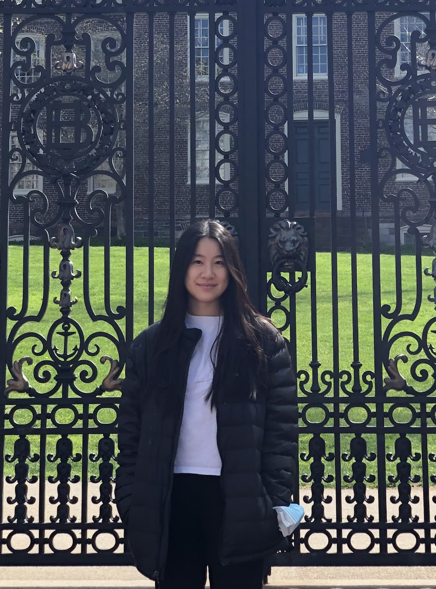
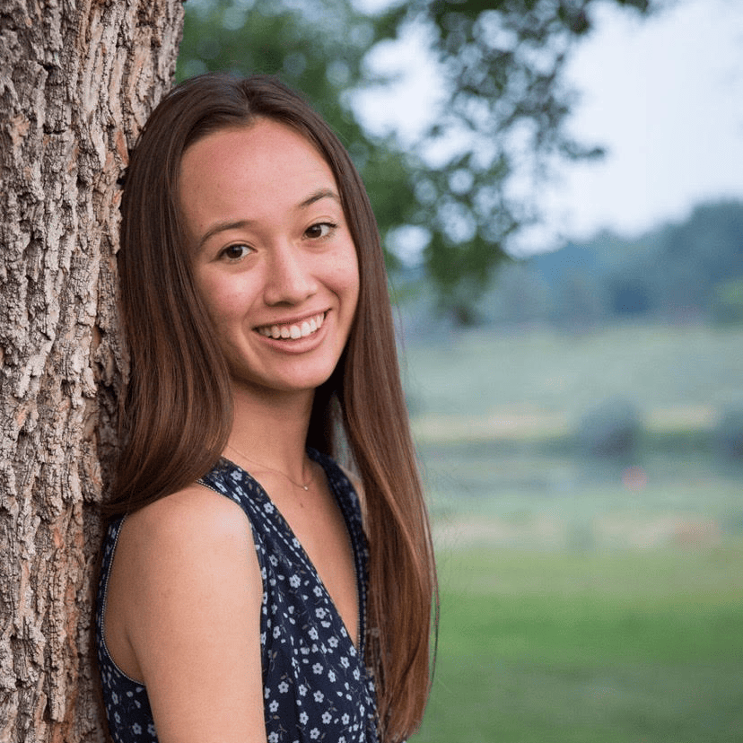
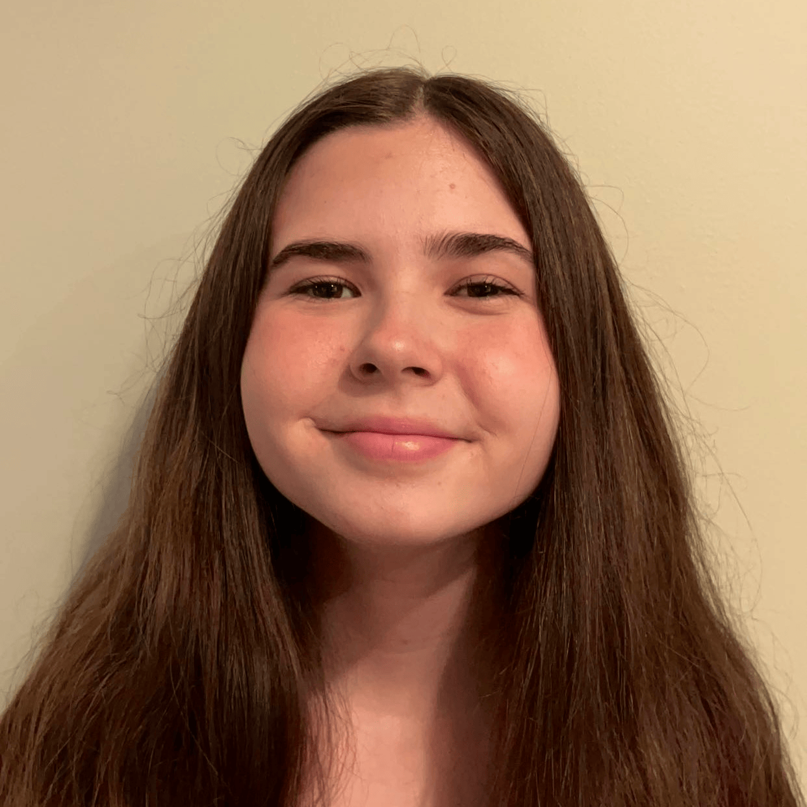
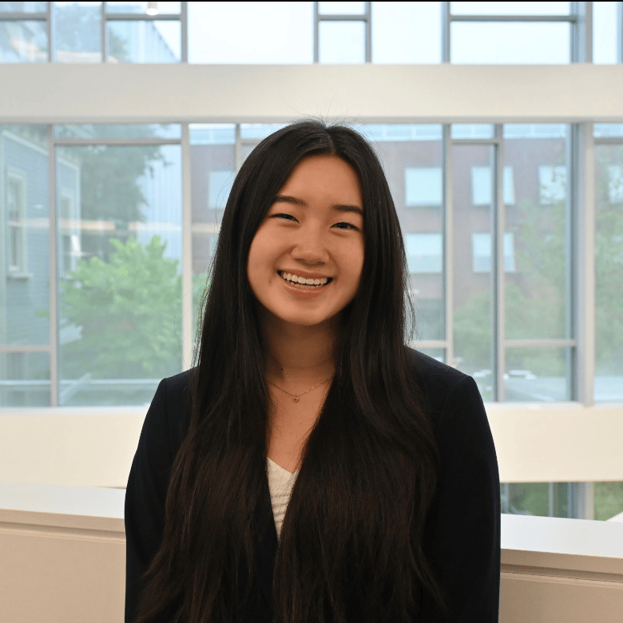

Meet our Team
Leadership
President
Rebecca Blumenthal ‘25
Economics-Public Policy
Research VP
Ava Ward '25
Environmental Science & Economics

Project Development VP
Clara Tandar '25
Biomedical Engineering & International and Public Affairs

Mental Health Co-Lead
Kate Kuli ‘25
Political Science & Philosophy
Mental Health Co-Lead
Maia Eng '26
International and Public Affairs
SARA Co-Lead
Rachel Kim ‘24
International and Public Affairs & Computer Science

SARA Co-Lead
Raima Islam ‘25
International and Public Affairs & Computer Science
CAT Co-Lead
Julian Cohen ‘26
History & International and Public Affairs

CAT Co-Lead
Lily Zamora ‘26
Political Science & Economics

Older Adult Policy Co-Lead
Aditya Lodha '25
History

Older Adult Policy Co-Lead
AJ Wu '26
Computer Science-Economics & Public Health
BIPTA Lead
Maddock Thomas '26
Critical Theory and Political Economy & Urban Studies
HOME Co-Lead
Colin Carter '27
International and Public Affairs

HOME Co-Lead
Riya Srinivasan '27
Political Science
Bilingual Education Co-Lead
Marcelo Rodriguez Parra '26
Computer Science-Economics & International and Public Affairs
Bilingual Education Co-Lead
Kayla Morrison '26
Political Science & Social Analysis and Research
Analysts
Mental Health Analyst
Catherine Kawaja ‘24
International and Public Affairs

Mental Health Analyst
Matt Grady '24
International and Public Affairs & Philosophy
Mental Health Analyst
Michael Thompson ‘24
Public Health-Health Services
Mental Health Analyst
Jazz Carlson '25
History
Mental Health Analyst
Robert Carr '25
Neuroscience
Mental Health Analyst
Gavin Schilling '25.5
International and Public Affairs & Economics
Mental Health Analyst
Samantha Renzulli '26
Economics & Behavioral Decision Sciences

Mental Health Analyst
Taleen Sample '26
Economics & History of Art and Architecture

Mental Health Analyst
Caroline O'Brien ‘27
Cognitive Neuroscience
SARA Analyst
Ava-Celeste Matos '25
International and Public Affairs & Portuguese and Brazilian Studies
SARA Analyst
Emily Colon ‘25
Political Science
SARA Analyst
Mira Echambadi ‘25
International and Public Affairs & Applied Mathematics
SARA Analyst
Yoo Min Lee ‘25
Political Science

SARA Analyst
Megan Ball ‘26
Computer Science-Economics

SARA Analyst
Erica Li ‘27
Applied Mathematics-Economics & Gender and Sexuality Studies
SARA Analyst
Faz Zaidi ‘27
Public Health
CAT Analyst
Kevin Kim '24
International and Public Affairs

CAT Analyst
Ava Cloonan '25
International and Public Affairs
CAT Analyst
Nathalia Klipp-Elias '25
International and Public Affairs
CAT Analyst
Darisel Velez '26
Political Science
CAT Analyst
Jared Lebovitz '26
Economics & Political Science
CAT Analyst
Marissa Scott '26
International and Public Affairs & Visual Arts
CAT Analyst
William Loughridge '26
Religious Studies & International and Public Affairs
CAT Analyst
Leo Caplan '27
Political Science
Older Adult Policy Analyst
Oliver Kneen '23.5
International and Public Affairs & Psychology
Older Adult Policy Analyst
Dylan Sciscoe '25
Applied Math-Economics & Political Science

Older Adult Policy Analyst
Hamid Torabzadeh '26
Public Health
Older Adult Policy Analyst
Isabel Hernandez '26
Economics & International and Public Affairs
Older Adult Policy Analyst
Oleksii Shebanov '26
History & Slavic Studies
Older Adult Policy Analyst
Kenneth Kalu '27
Public Health & International and Public Affairs
Older Adult Policy Analyst
Saloni Somia '27
Economics & Computer Science
BIPTA Analyst
Lorenzo Mahoney '24
Biology & International and Public Affairs
BIPTA Analyst
Shannon F. '26
Political Science
BIPTA Analyst
Craig Chiu '27
International and Public Affairs
BIPTA Analyst
Theo Illarionov '27
International and Public Affairs